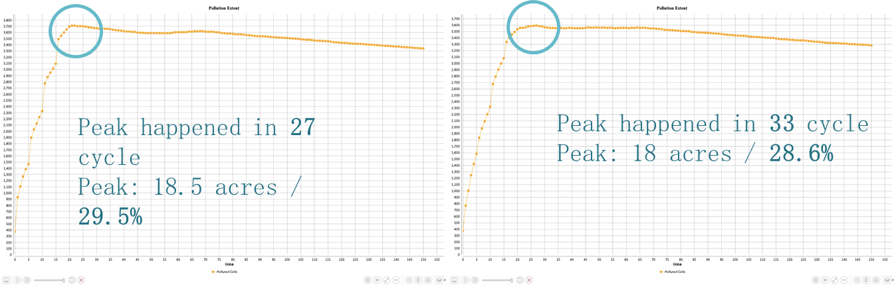

Strategy 01
Physical Block
A hard engineered barrier system to prevent canal water from entering streets. Halts localized swelling but triggers severe upstream consequences.
BASELINE
PHYSICAL
BLOCK
Strengths
- • Immediate flood cessation
- • Predictable protection zone
Weaknesses
- • High infrastructure capital cost
- • Severe ecological flow disruption
- • Obstructs canal sightlines
Pollution Discrepancy Data
